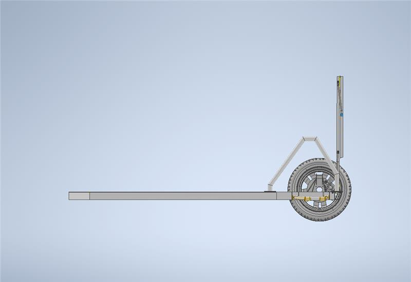
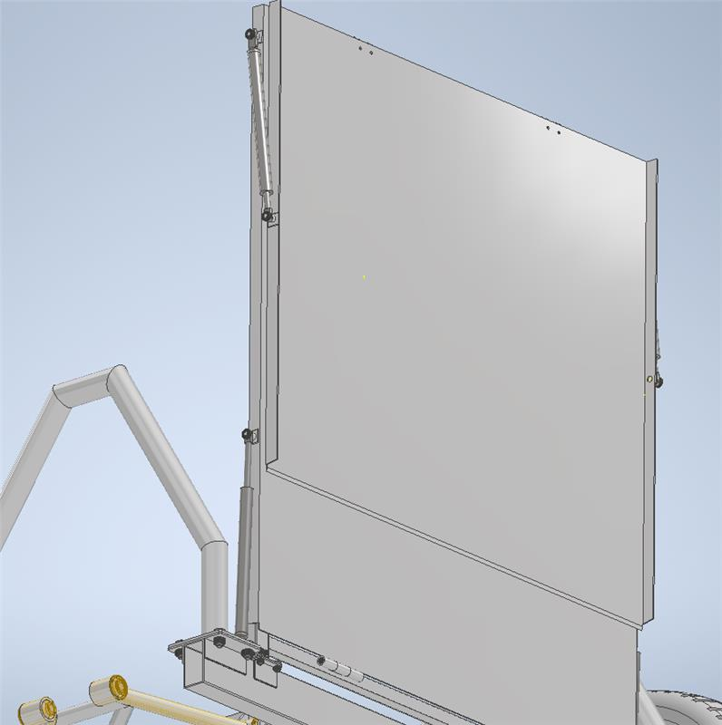
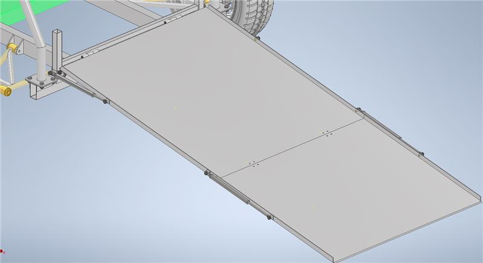
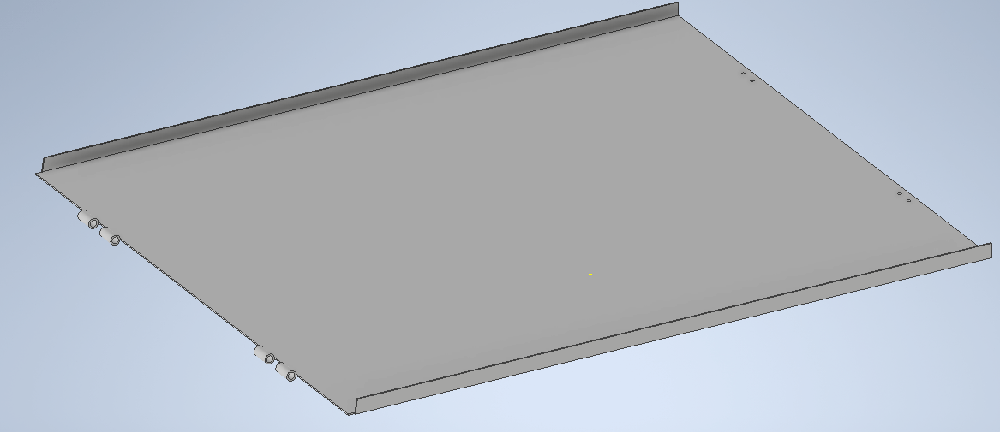
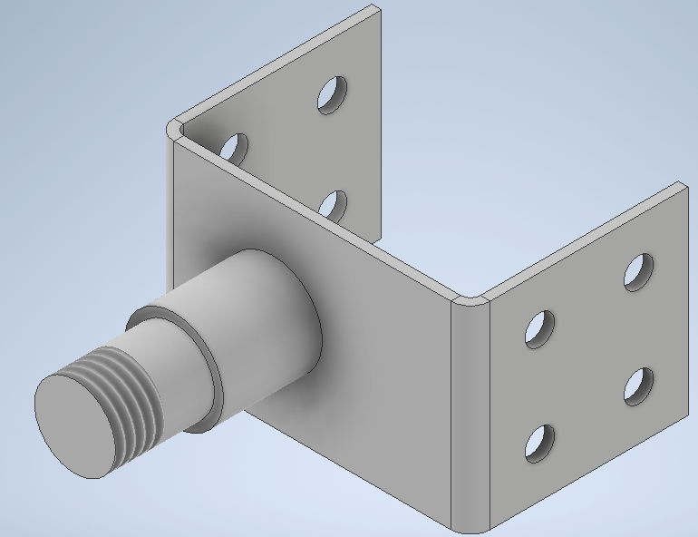
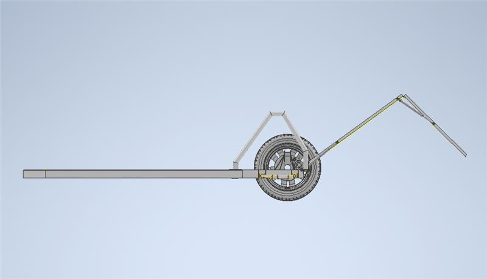
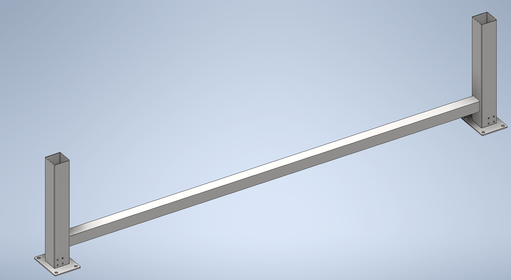

Virtual Prototyping & Simulation — Politecnico di Bari · A.Y. 2023–2024
Automotive Integration: Modular Wheelchair Ramp
A modular, two-section wheelchair ramp for rear vehicle access, engineered top-down in Autodesk Inventor around a generic car package: purely mechanical gas-strut actuation, heat-treated aluminium structure, and a parametric assembly designed to adapt to most existing chassis — cars, minivans, campers and buses.
Overview
The project addressed autonomous mobility for a wheelchair user in and out of a standard passenger vehicle. Dedicated accessible cars exist, but they are expensive, low-speed or one-off products. The goal was a standardised rear-access ramp system that could be adapted to the largest possible share of vehicles already on the road, instead of designing yet another bespoke vehicle.
The final outcome is a fully parametric, modular 3D assembly: a folding two-section ramp driven entirely by mechanical gas struts, modelled in Autodesk Inventor against an imported generic car model that defined every spatial constraint of the package.
Design Evolution
The concept went through a structured selection loop before any component was modelled. A first rear-entry solution with servo-actuated, stowable ramp was dropped for its electronic complexity; a side-entry layout was rejected on three counts: excessive package intrusion, no room for a climbing aid, and a driver transfer position that does not work in practice. Benchmarking the existing market — front-entry microcars like the Elbee (80 km/h) and rear-entry solutions like the Kenguru (45 km/h) — confirmed the gap: every product on the market leans on electro-actuation.
The selected concept borrows from one of the most reliable mechanisms in every car: the rear bonnet hinge. A two-piece ramp folds in rest position and is operated by two independent gas-strut groups — one deploying the ramp, one commanding the relative rotation between the two sections. No actuators, no electronics, no fixed piston stroke: the ramp can be opened fully even on uneven ground such as a kerb or a sidewalk, something a stroke-bound actuator cannot guarantee.
Requirements
- Easy maintenance and inspection of the mechanism, with every functional group reachable
- Effortless actuation — gas struts do the work, the user only guides
- Component interchangeability — the architecture minimises interdependence between parts
- Low weight — heat-treated aluminium alloys throughout
- Versatility — one system for cars, minivans, campers and buses
System Architecture
The structure is organised as a make-vs-buy split, tracked in a 24-line Inventor bill of materials (16 made, 8 bought):
- TLO — support frame (EN AW 7075 T6, welded and drilled): carries the mechanism and anchors it to the vehicle
- RPM1 / RPM2 — the two ramp sections (EN AW 2024 T6, press-bent): RPM1 links to frame and second section, RPM2 touches the ground
- PFP-TLO plates (EN AW 7075 T6, press-bent, drilled, welded, threaded): strut-to-frame interfaces
- PST-TLO plates (EN AW 7075 T6): attachment between vehicle chassis and support frame, welded to the vehicle and to be reviewed per application
- Junction hinges with bushings: the foldable connection between the two sections
Every fastener is a standard part — ISO 4017 and ISO 4018 hex screws, ISO 4033 nuts, threaded collars and bushing retainers — so the whole system can be assembled, disassembled and repaired with off-the-shelf hardware. Modularity is traceable in the BOM, where each functional group (frame, ramps, struts, hinges) lives independently of the others.
Top-Down Parametric Workflow
A generic car model was imported into Inventor first, and the ramp was designed inside its constraints, not next to them: package volumes, ground clearance, loading height and wheel arch position all came from the vehicle model and drove the kinematic layout of the struts and hinges. Because the assembly is fully parametric, adapting the system to a different chassis means updating the skeleton constraints — the components regenerate around the new package. This is what turns a wheelchair ramp into a platform valid across vehicle classes.
Results
- Delivered a fully parametric, modular 3D assembly integrating seamlessly with the imported vehicle package — ramp, frame, strut groups and hinges modelled as independent, interchangeable groups.
- Achieved a purely mechanical actuation concept (gas struts, zero electronics) that deploys fully even on uneven terrain, with no fixed stroke limitation.
- Documented the architecture in a 24-line make-vs-buy BOM with fully standardised fasteners (ISO 4017 / 4018 / 4033).
- Covered the full design loop: benchmarking, concept selection, requirement definition, kinematic layout, CAD modelling and BOM structuring — within a single course project.
Skills
Gallery






